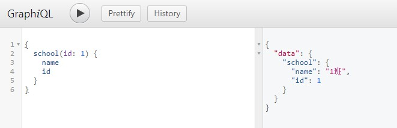
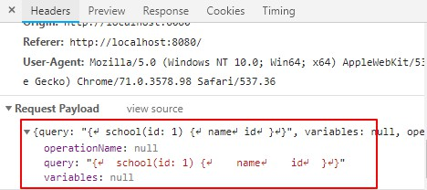
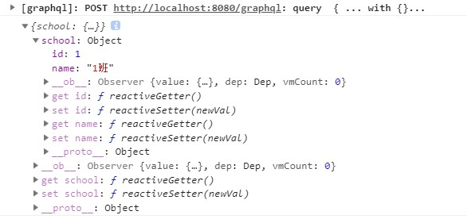

之前组内就有说过
graphql,在做影像字段配置的时候，当时就提过使用graphql来实现，但是综合考虑，并没有采用。所以趁着有空，自己写一个demo体验以下!
一 什么是graphql
借用官网的话——一种用于 API 的查询语言。
GraphQL 既是一种用于 API 的查询语言也是一个满足你数据查询的运行时。 GraphQL 对你的 API 中的数据提供了一套易于理解的完整描述，使得客户端能够准确地获得它需要的数据，而且没有任何冗余，也让 API 更容易地随着时间推移而演进，还能用于构建强大的开发者工具。
一个 GraphQL 服务是通过定义类型和类型上的字段来创建的，然后给每个类型上的每个字段提供解析函数。为每一个字段都提供一个解析函数，听起来工作量挺大，其实已经有一些很好的工具会帮我们自动解析简单字段类型！
接下来直接上例子~
二 后台服务 springboot + graghql
1 pom.xml
<dependency>
<groupId>org.springframework.boot</groupId>
<artifactId>spring-boot-starter-web</artifactId>
</dependency>
<dependency>
<groupId>org.mybatis.spring.boot</groupId>
<artifactId>mybatis-spring-boot-starter</artifactId>
<version>2.0.0</version>
</dependency>
<dependency>
<groupId>org.springframework.boot</groupId>
<artifactId>spring-boot-devtools</artifactId>
<scope>runtime</scope>
</dependency>
<dependency>
<groupId>com.h2database</groupId>
<artifactId>h2</artifactId>
<scope>runtime</scope>
</dependency>
<!-- graphql相关 -->
<dependency>
<groupId>com.graphql-java</groupId>
<artifactId>graphql-spring-boot-starter</artifactId>
<version>5.0.2</version>
</dependency>
<!-- GraphiQL tool for schema introspection and query debugging
能提供一个/graphiql页面，提供查询，方面测试
-->
<dependency>
<groupId>com.graphql-java</groupId>
<artifactId>graphiql-spring-boot-starter</artifactId>
<version>5.0.2</version>
</dependency>
<!-- 能够从GraphQL的模式定义*.graphqls文件构建出对应的Java的POJO类型对象.会将类路径中任何名为*.graphqls的文件用于提供模式定义 -->
<dependency>
<groupId>com.graphql-java</groupId>
<artifactId>graphql-java-tools</artifactId>
<version>5.2.4</version>
</dependency>2 demoapi.graphqls
在类路径下新建demoapi.graphqls文件，提供schema定义，graphql-java-tools会负责解析。
type Query {
school(id: ID): School
student(id: ID): Student
}
type School {
id: Int
name: String
ranking: Int
}
type Student {
id: Int
name: String
age: Int
classId: Int
}3 获取数据
需要实现GraphQLQueryResolver接口
@Component
public class Query implements GraphQLQueryResolver {
@Autowired
private SchoolMapper schoolMapper;
@Autowired
private StudentMapper studentMapper;
public School getSchool(Integer id) {
return schoolMapper.getById(id);
}
public Student student(Integer id) {
return studentMapper.getById(id);
}
}因为将graphql-spring-boot-starter作为依赖项添加到引导应用程序，并且应用程序中有GraphQLSchema bean，则可以在/graphql上访问servlet。
4 启动程序
启动后台，访问http://localhost:8080/graphiql，查询接口：


如图，后台接口不做更改，前端可以根据自己需求获取自己需要的数据，而且返回的数据结构跟你的请求结构相似！这个页面工具对能询到哪些字段信息有很好的提示功能。
当然，对于构建后台api有多种方式，如：
@Bean
GraphQLSchema schema() {
return GraphQLSchema.newSchema()
.query(GraphQLObjectType.newObject()
.name("query")
.field(field -> field
.name("test")
.type(Scalars.GraphQLString)
.dataFetcher(environment -> "response")
)
.build())
.build();
}这种方式，需要我们针对每一个字段提供一个解析函数，如上面的dataFetcher.这对于一些字段很多，返回字段名称很java对象的字段名称一致的，这样难免很乏所。对于这种情况，第一种方式——利用graphql-java-tools还是更加便捷一些。
好了，后端接口就写到这块，前端我们应该发送请求过来了？
首先我们可以看一下，上面的请求页面——Graphiql是怎么发送请求的，打开chrome的调试工具：

发现，是post请求，我们的请求参数如上图所示。所以发到后台的数据格式有一定的要求。比较庆幸的是，有一些很优秀的前端工具帮我做了这些，比如：apollo-client, graphql.js等，这里我使用graphql.js，因为它更轻量级。
三 web页面
前端搭建一个简单的vue项目：
安装graphql.js:
npm install graphql.js --save为了方便在vue中使用，做下列操作：
1 创建GraphQLProvider.js
import graphql from 'graphql.js'
export default {
install (Vue, url, options) {
Vue.mixin({
created () {
this._graph = graphql(url, options)
}
})
Object.defineProperty(Vue.prototype, '$graph', {
get () {
return this._graph
}
})
}
}2 在main.js中引入
import GraphQLProvider from './util/GraphQLProvider'
Vue.use(GraphQLProvider, 'http://localhost:8080/graphql', {
// method: 'POST', 默认就是post
alwaysAutodeclare: true,
asJSON: true,
debug: true,
headers: {
// headers...
}
})然后就可以在页面使用this.$graph去使用了。实际操作：
export default {
name: 'test',
data () {
return {
msg: ''
}
},
mounted () {
this.test()
},
methods: {
test () {
let param = `
school(id: 1) {
name
id
}
`
this.$graph.query.run(param).then(response => {
console.log(response)
this.msg = response
})
}
}
}ok，刷新页面：

到此，我们可以改变变量param请求参数，就可以获取自己想要的信息了。这里这是一个简单的演示，关于更多的信息，可以参考下面。
代码示例GitHub
更多信息